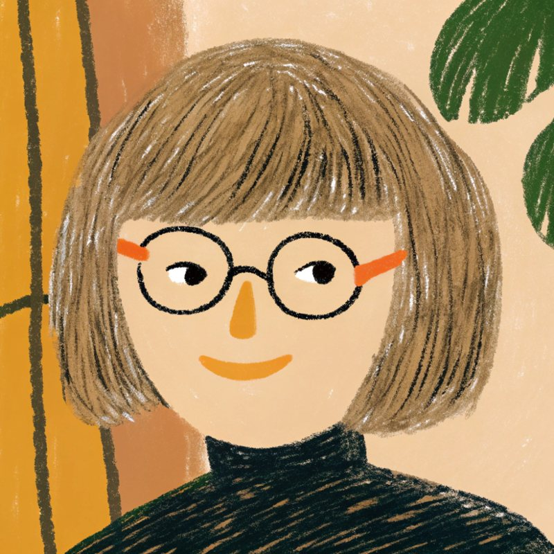

Graphic & Layout Design
Making dense information clear, orderly and warm.
精選作品Selected works
evian 與波爾茶為既有品牌，品牌名稱屬各自擁有者，相關作品為課程作業，與品牌方無關。Brand names belong to their respective owners; these student works are not affiliated with the brands.
專題Case study
團隊專題・6 人Team project · 6 members
Team: Name · Name · Name · Name · Name · Name
以「預防性犯罪」為核心，將性教育內容融入國小聯絡簿中，創造趣味與互動性的創新聯絡簿。設計針對低、中、高年級進行年齡分級，結合漫畫故事、角色遊戲卡及折紙等多元媒材，讓孩子在日常書寫與遊戲中，自然學習自我保護的知識。聯絡簿同時融入數位功能，透過掃碼觀看教學影片或下載教材，增強學習的靈活性與便利性。設計強調親師共育，提供觀察與反饋區域，讓家長與老師共同參與孩子的成長，提升孩子的保護意識，以及推動兒童性犯罪防治教育的普及。
Centered on preventing sexual crimes, this project weaves sex education into the elementary-school contact book, creating an interactive and playful alternative. Designed in graded versions for lower, middle and upper grades, it combines comic stories, character game cards and origami, so children learn self-protection naturally through everyday writing and play. Digital features such as QR codes open teaching videos and downloadable materials. Emphasizing home–school cooperation, it provides observation and feedback sections so parents and teachers can take part in a child's growth, raising awareness of self-protection and promoting wider child sexual-crime prevention education.
專題 Instagram 的衛教系列貼文：統一版型、色彩與字級，讓資訊在手機上也好讀。
A health-education series for the project's Instagram: one template, consistent color and type, easy to read on a phone.
個人實驗Personal experiments
個人拼貼與生成式工具的創作實驗：由我主導構想與構圖，再用 Photoshop 後製調整。
Personal experiments in collage and generative tools (Recraft, Google Flow). I direct the idea and composition, then refine in Photoshop.

關於我About me
把複雜的資訊，排得清楚又有溫度。Making dense information clear, orderly and warm.
求職中Open to work平面設計／美編・全職・接受遠端Graphic & layout design · Full-time · Remote OK
我喜歡把繁雜的資訊整理成清楚、好讀的版面。從菜單、手冊到資訊圖表，習慣先釐清閱讀順序與層次，再用色彩和留白讓內容更有條理。I turn dense information into clear, easy-to-read layouts. From menus and booklets to infographics, I start by sorting out reading order and hierarchy, then use color and white space to keep the content orderly.
有合作或工作機會，歡迎來信Have a project or an opening? Let's talk.